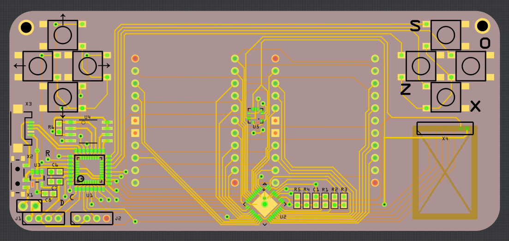

Redesigned PCB¶
Published on 2018-04-14 in CircuitPython Badge.
I couldn’t sleep this night, and that means I got to redo the PCB from the last log. I like it much better now:
There is a number of improvements and cool things about it:
Most components (except for the display driver and accelerometer) are not covered by the display, so they can be easily inspected and debugged.
The USB socket and the switch are now on the side, which means you can have the empty part of the badge either at the top or at the bottom.
I got rid of the prototyping area (nobody would have a soldering iron at the conference anyways), and replaced it with two grove connectors — one for I²C and one for analog in/out.
The accelerometer is in the center of the board, so you can easily calculate its orientation.
I added a footprint for an NRF24L01 radio module. I am not yet sure what we will use for communication, but this module is common and cheap, and lets us provide a similar interface to what the “radio” module does on the micro:bit. This could be easily modified to instead have a wifi, bluetooth, lora, nfc or anything else — the pins used support both SPI and UART.
The back of the board is still completely empty, and has plenty of room for the battery holder. Unfortunately I wasn’t able to include mounting holes for the holder (they would be in the center, where the accelerometer and display driver are), so it will need to be glued with a double-sided tape.
The display’s LEDs are powered directly from the USB or battery, without voltage regulation — that should save some power. As a side effect, because USB will have higher voltage than the battery, the display will probably be a little bit brighter when connected.
The switch switches between battery and USB power, so no diodes or mosfets necessaery for backfeed protection of the USB.
The MCU has a double footprint — for both QFN and TQFP packages. I’m going to use TQFP for testing, because they are easier to handle and that’s what I have at hand, but for production QFN is cheaper.
Overall, I’m pretty happy with it already. Over the weekend I will poke at it a little bit more, verify everything, and on Monday I’m going to order a prototype PCB.